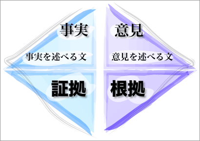
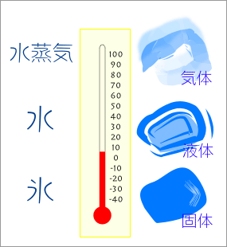
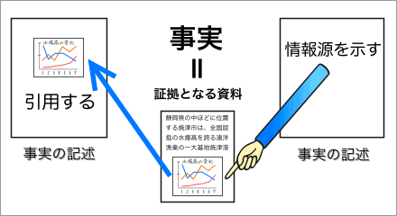

事実の記述に対する証拠

【事実と意見】で述べたように、論文やレポートでは、〈事実〉と〈意見〉とが区別される。言い換えれば、論文やレポートには《事実を記述した文》と《意見を記述した文》とがあるわけである。
論文やレポートでは、《事実を記述した文》に対しては《証拠》、《意見を記述した文》に対しては《根拠》を示す必要がある。ここでは、《事実を記述した文》に対する《証拠》の示し方について説明する。
証拠とは？
証拠とは、事実（正しい事実）を明らかにするものという意味である。ここで「事実を明らかにする」とは、その事実が実際に存在することを示すということである。
ある事実が「実際に存在する」ということは、それが《実際に「起こった」こと》であるか、または、《実際に「ある／あった」ものである》ということを意味する。たとえば、実際にアメリカで大地震が起こったのならば、それは『明らかに正しい事実』である。また、実際にあなたに「山田太郎」という友だちがいるのならば、それも『明らかに正しい事実』である。
では、ある事実が「実際に存在する」かどうかは、どのように確かめればよいだろうか。
【事実と意見】で述べたように、事実とは、誰でも同じように経験できる物事のことであり、調査や実験、観察などによって確認できるものなのである。つまり、調査や実験、観察の結果を示すことによって、その事実が実際に存在するかどうかを決定することができるということになる。

たとえば、「水は０度以下に冷やすと氷になる」という事実が実際に存在するかどうかは、水を０度以下に冷やす実験によって確かめることができる。もし「水は０度以下に冷やすと氷になる」というのが正しい事実であれば、いつ誰が実験しても水は氷になるはずである。
したがって、もし、あなたが「『水は０度以下に冷やすと氷になる』というのは事実である」と主張するのであれば、実際に０度以下で水が氷になったという実験結果を示せばよいことになるだろう。あなたの主張を疑う人がいるかもしれないが、その場合は、その人が同じ実験をすることで、あなたの主張が正しいのかどうか決めることができるはずである。この例では、実際に０度以下で水が氷になったという実験結果が、『水は０度以下に冷やすと氷になる』という事実の〈証拠〉になるわけである。
証拠の種類
論文やレポートで「事実」を述べる場合、証拠になるものとしては、
- 実験の結果（データ）：実際に試したもの
- 調査の結果（データ）：実際に調べたもの
- 観察の結果（データ）：実際に見たもの（聞いたもの）
などがある。事実とは、誰でも同じように経験できる物事のことであるから、他の人が行なった実験や調査も、証拠として利用することができる。
証拠の示し方
証拠が、自分が行なった実験や調査ならば、その結果（データ）を本文の中で示せばよい。
また、証拠が他の人が行なった実験や調査である場合は、次の２つの方法がある。
- 実験や調査の内容・結果を引用する
- 情報源（ソース）を示す
内容・結果を引用する
引用によって示す場合は、他の引用や参照と同じように書けばよい。なお、引用については、【→引用の方法】、参照については【→参照の方法】、引用や参照で用いられる表現や文型については【→引用する表現】を参照せよ。
情報源（ソース）を示す
情報源（ソース）を示すというのは、証拠を直接本文内に引用するのではなく、証拠が書かれている文献や資料の名前（と証拠が書かれている場所）を示す方法である。
たとえば、情報源（ソース）を示すときには、次のように書く。
日本における木材の主要輸入先国は、輸入額順に、カナダ、インドネシア、中国、マレーシア、ロシアなどである（矢野 2006：107）。
上の例では、「矢野 2006」という文献の「107」ページに証拠となるデータがあることが示されている。木材の輸入額の統計表やグラフなどを証拠として直接示すのではなく、統計表やグラフが掲載されている資料の名前と場所だけを示しているわけである。

情報源（ソース）の示し方は、基本的に引用や参照での出典の書き方と同じでよい。なお、引用や参照での出典の書き方については、【引用の出典の示し方】および【→参照での出典の示し方】を参照せよ。